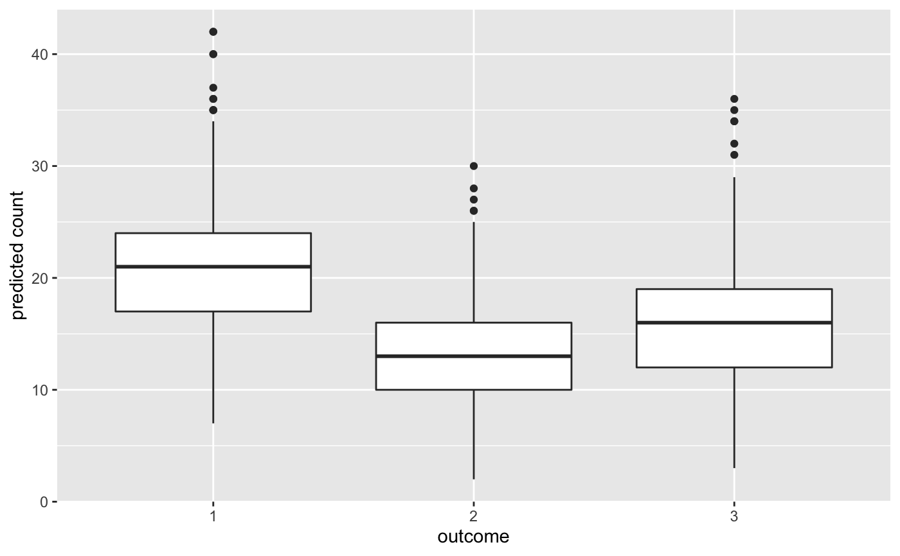

posterior_predict.stanreg.RdThe posterior predictive distribution is the distribution of the outcome implied by the model after using the observed data to update our beliefs about the unknown parameters in the model. Simulating data from the posterior predictive distribution using the observed predictors is useful for checking the fit of the model. Drawing from the posterior predictive distribution at interesting values of the predictors also lets us visualize how a manipulation of a predictor affects (a function of) the outcome(s). With new observations of predictor variables we can use the posterior predictive distribution to generate predicted outcomes.
# S3 method for stanreg posterior_predict(object, newdata = NULL, draws = NULL, re.form = NULL, fun = NULL, seed = NULL, offset = NULL, ...) # S3 method for stanmvreg posterior_predict(object, m = 1, newdata = NULL, draws = NULL, re.form = NULL, fun = NULL, seed = NULL, ...)
| object | A fitted model object returned by one of the
rstanarm modeling functions. See |
|---|---|
| newdata | Optionally, a data frame in which to look for variables with
which to predict. If omitted, the model matrix is used. If |
| draws | An integer indicating the number of draws to return. The default and maximum number of draws is the size of the posterior sample. |
| re.form | If |
| fun | An optional function to apply to the results. |
| seed | An optional |
| offset | A vector of offsets. Only required if |
| ... | For |
| m | Integer specifying the number or name of the submodel |
A draws by nrow(newdata) matrix of simulations from the
posterior predictive distribution. Each row of the matrix is a vector of
predictions generated using a single draw of the model parameters from the
posterior distribution. The returned matrix will also have class
"ppd" to indicate it contains draws from the posterior predictive
distribution.
For binomial models with a number of trials greater than one (i.e., not
Bernoulli models), if newdata is specified then it must include all
variables needed for computing the number of binomial trials to use for the
predictions. For example if the left-hand side of the model formula is
cbind(successes, failures) then both successes and
failures must be in newdata. The particular values of
successes and failures in newdata do not matter so
long as their sum is the desired number of trials. If the left-hand side of
the model formula were cbind(successes, trials - successes) then
both trials and successes would need to be in newdata,
probably with successes set to 0 and trials specifying
the number of trials. See the Examples section below and the
How to Use the rstanarm Package for examples.
For models estimated with stan_clogit, the number of
successes per stratum is ostensibly fixed by the research design. Thus, when
doing posterior prediction with new data, the data.frame passed to
the newdata argument must contain an outcome variable and a stratifying
factor, both with the same name as in the original data.frame. Then, the
posterior predictions will condition on this outcome in the new data.
pp_check for graphical posterior predictive checks.
Examples of posterior predictive checking can also be found in the
rstanarm vignettes and demos.
if (!exists("example_model")) example(example_model) yrep <- posterior_predict(example_model) table(yrep)#> yrep #> 0 1 2 3 4 5 6 7 8 9 10 11 12 13 14 15 #> 9963 7218 4204 2390 1328 846 570 426 267 219 184 126 84 47 37 30 #> 16 17 18 19 20 21 22 #> 25 18 5 5 6 1 1# \donttest{ # Using newdata counts <- c(18,17,15,20,10,20,25,13,12) outcome <- gl(3,1,9) treatment <- gl(3,3) fit3 <- stan_glm(counts ~ outcome + treatment, family = poisson(link="log"), prior = normal(0, 1), prior_intercept = normal(0, 5))#> Warning: Omitting the 'data' argument is not recommended and may not be allowed in future versions of rstanarm. Some post-estimation functions (in particular 'update', 'loo', 'kfold') are not guaranteed to work properly unless 'data' is specified as a data frame.#> #> SAMPLING FOR MODEL 'count' NOW (CHAIN 1). #> Chain 1: #> Chain 1: Gradient evaluation took 0.000113 seconds #> Chain 1: 1000 transitions using 10 leapfrog steps per transition would take 1.13 seconds. #> Chain 1: Adjust your expectations accordingly! #> Chain 1: #> Chain 1: #> Chain 1: Iteration: 1 / 2000 [ 0%] (Warmup) #> Chain 1: Iteration: 200 / 2000 [ 10%] (Warmup) #> Chain 1: Iteration: 400 / 2000 [ 20%] (Warmup) #> Chain 1: Iteration: 600 / 2000 [ 30%] (Warmup) #> Chain 1: Iteration: 800 / 2000 [ 40%] (Warmup) #> Chain 1: Iteration: 1000 / 2000 [ 50%] (Warmup) #> Chain 1: Iteration: 1001 / 2000 [ 50%] (Sampling) #> Chain 1: Iteration: 1200 / 2000 [ 60%] (Sampling) #> Chain 1: Iteration: 1400 / 2000 [ 70%] (Sampling) #> Chain 1: Iteration: 1600 / 2000 [ 80%] (Sampling) #> Chain 1: Iteration: 1800 / 2000 [ 90%] (Sampling) #> Chain 1: Iteration: 2000 / 2000 [100%] (Sampling) #> Chain 1: #> Chain 1: Elapsed Time: 0.051805 seconds (Warm-up) #> Chain 1: 0.041146 seconds (Sampling) #> Chain 1: 0.092951 seconds (Total) #> Chain 1: #> #> SAMPLING FOR MODEL 'count' NOW (CHAIN 2). #> Chain 2: #> Chain 2: Gradient evaluation took 9e-06 seconds #> Chain 2: 1000 transitions using 10 leapfrog steps per transition would take 0.09 seconds. #> Chain 2: Adjust your expectations accordingly! #> Chain 2: #> Chain 2: #> Chain 2: Iteration: 1 / 2000 [ 0%] (Warmup) #> Chain 2: Iteration: 200 / 2000 [ 10%] (Warmup) #> Chain 2: Iteration: 400 / 2000 [ 20%] (Warmup) #> Chain 2: Iteration: 600 / 2000 [ 30%] (Warmup) #> Chain 2: Iteration: 800 / 2000 [ 40%] (Warmup) #> Chain 2: Iteration: 1000 / 2000 [ 50%] (Warmup) #> Chain 2: Iteration: 1001 / 2000 [ 50%] (Sampling) #> Chain 2: Iteration: 1200 / 2000 [ 60%] (Sampling) #> Chain 2: Iteration: 1400 / 2000 [ 70%] (Sampling) #> Chain 2: Iteration: 1600 / 2000 [ 80%] (Sampling) #> Chain 2: Iteration: 1800 / 2000 [ 90%] (Sampling) #> Chain 2: Iteration: 2000 / 2000 [100%] (Sampling) #> Chain 2: #> Chain 2: Elapsed Time: 0.047161 seconds (Warm-up) #> Chain 2: 0.052444 seconds (Sampling) #> Chain 2: 0.099605 seconds (Total) #> Chain 2: #> #> SAMPLING FOR MODEL 'count' NOW (CHAIN 3). #> Chain 3: #> Chain 3: Gradient evaluation took 2.6e-05 seconds #> Chain 3: 1000 transitions using 10 leapfrog steps per transition would take 0.26 seconds. #> Chain 3: Adjust your expectations accordingly! #> Chain 3: #> Chain 3: #> Chain 3: Iteration: 1 / 2000 [ 0%] (Warmup) #> Chain 3: Iteration: 200 / 2000 [ 10%] (Warmup) #> Chain 3: Iteration: 400 / 2000 [ 20%] (Warmup) #> Chain 3: Iteration: 600 / 2000 [ 30%] (Warmup) #> Chain 3: Iteration: 800 / 2000 [ 40%] (Warmup) #> Chain 3: Iteration: 1000 / 2000 [ 50%] (Warmup) #> Chain 3: Iteration: 1001 / 2000 [ 50%] (Sampling) #> Chain 3: Iteration: 1200 / 2000 [ 60%] (Sampling) #> Chain 3: Iteration: 1400 / 2000 [ 70%] (Sampling) #> Chain 3: Iteration: 1600 / 2000 [ 80%] (Sampling) #> Chain 3: Iteration: 1800 / 2000 [ 90%] (Sampling) #> Chain 3: Iteration: 2000 / 2000 [100%] (Sampling) #> Chain 3: #> Chain 3: Elapsed Time: 0.043293 seconds (Warm-up) #> Chain 3: 0.042579 seconds (Sampling) #> Chain 3: 0.085872 seconds (Total) #> Chain 3: #> #> SAMPLING FOR MODEL 'count' NOW (CHAIN 4). #> Chain 4: #> Chain 4: Gradient evaluation took 9e-06 seconds #> Chain 4: 1000 transitions using 10 leapfrog steps per transition would take 0.09 seconds. #> Chain 4: Adjust your expectations accordingly! #> Chain 4: #> Chain 4: #> Chain 4: Iteration: 1 / 2000 [ 0%] (Warmup) #> Chain 4: Iteration: 200 / 2000 [ 10%] (Warmup) #> Chain 4: Iteration: 400 / 2000 [ 20%] (Warmup) #> Chain 4: Iteration: 600 / 2000 [ 30%] (Warmup) #> Chain 4: Iteration: 800 / 2000 [ 40%] (Warmup) #> Chain 4: Iteration: 1000 / 2000 [ 50%] (Warmup) #> Chain 4: Iteration: 1001 / 2000 [ 50%] (Sampling) #> Chain 4: Iteration: 1200 / 2000 [ 60%] (Sampling) #> Chain 4: Iteration: 1400 / 2000 [ 70%] (Sampling) #> Chain 4: Iteration: 1600 / 2000 [ 80%] (Sampling) #> Chain 4: Iteration: 1800 / 2000 [ 90%] (Sampling) #> Chain 4: Iteration: 2000 / 2000 [100%] (Sampling) #> Chain 4: #> Chain 4: Elapsed Time: 0.041397 seconds (Warm-up) #> Chain 4: 0.049083 seconds (Sampling) #> Chain 4: 0.09048 seconds (Total) #> Chain 4:nd <- data.frame(treatment = factor(rep(1,3)), outcome = factor(1:3)) ytilde <- posterior_predict(fit3, nd, draws = 500) print(dim(ytilde)) # 500 by 3 matrix (draws by nrow(nd))#> [1] 500 3ytilde <- data.frame(count = c(ytilde), outcome = rep(nd$outcome, each = 500)) ggplot2::ggplot(ytilde, ggplot2::aes(x=outcome, y=count)) + ggplot2::geom_boxplot() + ggplot2::ylab("predicted count")# Using newdata with a binomial model. # example_model is binomial so we need to set # the number of trials to use for prediction. # This could be a different number for each # row of newdata or the same for all rows. # Here we'll use the same value for all. nd <- lme4::cbpp print(formula(example_model)) # cbind(incidence, size - incidence) ~ ...#> cbind(incidence, size - incidence) ~ size + period + (1 | herd)nd$size <- max(nd$size) + 1L # number of trials nd$incidence <- 0 # set to 0 so size - incidence = number of trials ytilde <- posterior_predict(example_model, newdata = nd) # Using fun argument to transform predictions mtcars2 <- mtcars mtcars2$log_mpg <- log(mtcars2$mpg) fit <- stan_glm(log_mpg ~ wt, data = mtcars2)#> #> SAMPLING FOR MODEL 'continuous' NOW (CHAIN 1). #> Chain 1: #> Chain 1: Gradient evaluation took 1.7e-05 seconds #> Chain 1: 1000 transitions using 10 leapfrog steps per transition would take 0.17 seconds. #> Chain 1: Adjust your expectations accordingly! #> Chain 1: #> Chain 1: #> Chain 1: Iteration: 1 / 2000 [ 0%] (Warmup) #> Chain 1: Iteration: 200 / 2000 [ 10%] (Warmup) #> Chain 1: Iteration: 400 / 2000 [ 20%] (Warmup) #> Chain 1: Iteration: 600 / 2000 [ 30%] (Warmup) #> Chain 1: Iteration: 800 / 2000 [ 40%] (Warmup) #> Chain 1: Iteration: 1000 / 2000 [ 50%] (Warmup) #> Chain 1: Iteration: 1001 / 2000 [ 50%] (Sampling) #> Chain 1: Iteration: 1200 / 2000 [ 60%] (Sampling) #> Chain 1: Iteration: 1400 / 2000 [ 70%] (Sampling) #> Chain 1: Iteration: 1600 / 2000 [ 80%] (Sampling) #> Chain 1: Iteration: 1800 / 2000 [ 90%] (Sampling) #> Chain 1: Iteration: 2000 / 2000 [100%] (Sampling) #> Chain 1: #> Chain 1: Elapsed Time: 0.044655 seconds (Warm-up) #> Chain 1: 0.040839 seconds (Sampling) #> Chain 1: 0.085494 seconds (Total) #> Chain 1: #> #> SAMPLING FOR MODEL 'continuous' NOW (CHAIN 2). #> Chain 2: #> Chain 2: Gradient evaluation took 1.5e-05 seconds #> Chain 2: 1000 transitions using 10 leapfrog steps per transition would take 0.15 seconds. #> Chain 2: Adjust your expectations accordingly! #> Chain 2: #> Chain 2: #> Chain 2: Iteration: 1 / 2000 [ 0%] (Warmup) #> Chain 2: Iteration: 200 / 2000 [ 10%] (Warmup) #> Chain 2: Iteration: 400 / 2000 [ 20%] (Warmup) #> Chain 2: Iteration: 600 / 2000 [ 30%] (Warmup) #> Chain 2: Iteration: 800 / 2000 [ 40%] (Warmup) #> Chain 2: Iteration: 1000 / 2000 [ 50%] (Warmup) #> Chain 2: Iteration: 1001 / 2000 [ 50%] (Sampling) #> Chain 2: Iteration: 1200 / 2000 [ 60%] (Sampling) #> Chain 2: Iteration: 1400 / 2000 [ 70%] (Sampling) #> Chain 2: Iteration: 1600 / 2000 [ 80%] (Sampling) #> Chain 2: Iteration: 1800 / 2000 [ 90%] (Sampling) #> Chain 2: Iteration: 2000 / 2000 [100%] (Sampling) #> Chain 2: #> Chain 2: Elapsed Time: 0.038833 seconds (Warm-up) #> Chain 2: 0.040103 seconds (Sampling) #> Chain 2: 0.078936 seconds (Total) #> Chain 2: #> #> SAMPLING FOR MODEL 'continuous' NOW (CHAIN 3). #> Chain 3: #> Chain 3: Gradient evaluation took 9e-06 seconds #> Chain 3: 1000 transitions using 10 leapfrog steps per transition would take 0.09 seconds. #> Chain 3: Adjust your expectations accordingly! #> Chain 3: #> Chain 3: #> Chain 3: Iteration: 1 / 2000 [ 0%] (Warmup) #> Chain 3: Iteration: 200 / 2000 [ 10%] (Warmup) #> Chain 3: Iteration: 400 / 2000 [ 20%] (Warmup) #> Chain 3: Iteration: 600 / 2000 [ 30%] (Warmup) #> Chain 3: Iteration: 800 / 2000 [ 40%] (Warmup) #> Chain 3: Iteration: 1000 / 2000 [ 50%] (Warmup) #> Chain 3: Iteration: 1001 / 2000 [ 50%] (Sampling) #> Chain 3: Iteration: 1200 / 2000 [ 60%] (Sampling) #> Chain 3: Iteration: 1400 / 2000 [ 70%] (Sampling) #> Chain 3: Iteration: 1600 / 2000 [ 80%] (Sampling) #> Chain 3: Iteration: 1800 / 2000 [ 90%] (Sampling) #> Chain 3: Iteration: 2000 / 2000 [100%] (Sampling) #> Chain 3: #> Chain 3: Elapsed Time: 0.037656 seconds (Warm-up) #> Chain 3: 0.046034 seconds (Sampling) #> Chain 3: 0.08369 seconds (Total) #> Chain 3: #> #> SAMPLING FOR MODEL 'continuous' NOW (CHAIN 4). #> Chain 4: #> Chain 4: Gradient evaluation took 1e-05 seconds #> Chain 4: 1000 transitions using 10 leapfrog steps per transition would take 0.1 seconds. #> Chain 4: Adjust your expectations accordingly! #> Chain 4: #> Chain 4: #> Chain 4: Iteration: 1 / 2000 [ 0%] (Warmup) #> Chain 4: Iteration: 200 / 2000 [ 10%] (Warmup) #> Chain 4: Iteration: 400 / 2000 [ 20%] (Warmup) #> Chain 4: Iteration: 600 / 2000 [ 30%] (Warmup) #> Chain 4: Iteration: 800 / 2000 [ 40%] (Warmup) #> Chain 4: Iteration: 1000 / 2000 [ 50%] (Warmup) #> Chain 4: Iteration: 1001 / 2000 [ 50%] (Sampling) #> Chain 4: Iteration: 1200 / 2000 [ 60%] (Sampling) #> Chain 4: Iteration: 1400 / 2000 [ 70%] (Sampling) #> Chain 4: Iteration: 1600 / 2000 [ 80%] (Sampling) #> Chain 4: Iteration: 1800 / 2000 [ 90%] (Sampling) #> Chain 4: Iteration: 2000 / 2000 [100%] (Sampling) #> Chain 4: #> Chain 4: Elapsed Time: 0.040192 seconds (Warm-up) #> Chain 4: 0.041436 seconds (Sampling) #> Chain 4: 0.081628 seconds (Total) #> Chain 4:ytilde <- posterior_predict(fit, fun = exp) # }